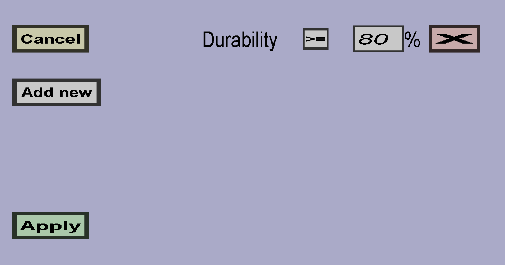

The durability constraint menu allows you to define the durability constraints of a (crafting recipe) ingredient. If you have 1 constraint, it should look like this:
Use the Add new button to add a new durability constraint and use the X button on the right of an existing durability constraint to remove it. Each constraint requires the durability of potential items to be above or below a certain threshold percentage of the maximum durability. For instance, in the screenshot above, items must have at least 80% of their maximum durability left. If not, they can't be used as ingredient for this recipe. You can use this to prevent players from using nearly broken items as ingredients in recipes.
If you don't have any durability constraints, the durability of items will be ignored. If an item violates at least 1 durability constraint, it won't be accepted as ingredient. If an item can't lose durability (for instance when it's unbreakable or it's not even a tool), it's durability will be considered 100%.